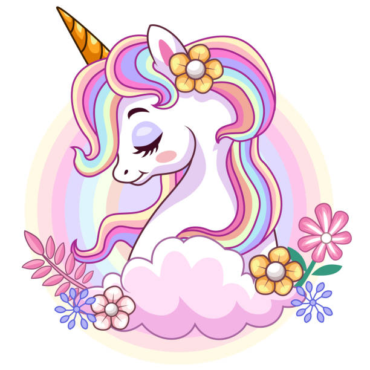

¡Bienvenidos al Mundo Encantado de los Unicornios!
Los unicornios son criaturas míticas fascinantes que han capturado la imaginación de la humanidad durante siglos. Representan la pureza, la magia y la belleza en muchas culturas alrededor del mundo.
En esta página, exploraremos todo sobre estos seres legendarios: sus orígenes en la mitología, su simbolismo y cómo han evolucionado en la cultura popular moderna.
Además, descubrirás la relación especial entre Lucía —una chica soñadora, valiente, resiliente y un poco salvaje— y su unicornio. Juntas emprenden aventuras fantásticas, mostrando que la amistad con estas criaturas mágicas es un reflejo de nuestra propia imaginación y fuerza interior.
¿Qué es un Unicornio?

Un unicornio es un animal mítico generalmente descrito como un caballo blanco con un cuerno espiral en la frente. Se dice que poseen poderes mágicos y son símbolos de inocencia y gracia.
Historia y Mitología
Los unicornios aparecen en leyendas antiguas de Europa, Asia y Oriente Medio. En la Edad Media europea, se creía que su cuerno tenía propiedades curativas.
Unicornios en la Cultura Popular
Hoy en día, los unicornios son icónicos en películas, libros y productos para niños. ¡Incluso hay unicornios en el arcoíris!
La Aventura de Lucía y su Unicornio
Lucía, una joven soñadora con un espíritu valiente y resiliente, encontró a su unicornio en un bosque mágico. Juntas, enfrentan desafíos, exploran mundos fantásticos y aprenden lecciones de amistad y coraje. Esta historia nos recuerda que, al igual que Lucía, todos podemos conectar con la magia que llevamos dentro.